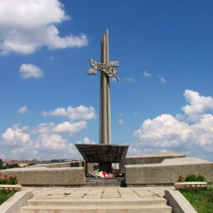

Памятный знак Камышанам, погибшим в годы ВОВ
Памятный знак Камышанам, погибшим в годы Великой Отечественной войны установлен в 1995 году. В первые дни Великой Отечественной войны более 20000 жителей города были отправлены на фронт. Всего же в боях ВОВ приняли участие около 23000 камышан, и 6936 из них погибли, защищая Родину. Памятный знак стал местом сбора жителей Камышина по торжественным и памятным датам, площадкой для проведения митингов и возложения цветов в память о погибших в годы войны.